k.i.n.d.
Бесплатная веганская библиотека рецептов и трекер питания
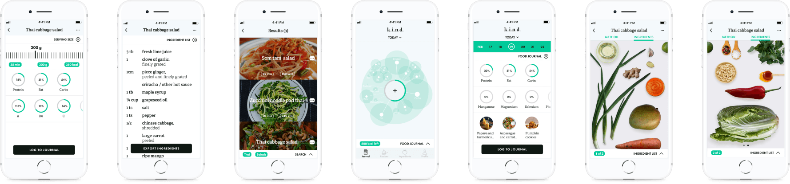
Описание
k.i.n.d. помогает пользователям узнать больше о растительной диете и предоставляет все необходимые условия для поддержания здорового и сбалансированного растительного питания.
Мои обязанности
- Брендинг
- UX Исследование
- Информационная Архитектура
- Пользовательские Сценарии
- Вайрфреймы
- Прототипы
Год
- 2021
Теги
- мобильное приложение
- 2021
Почему именно веганство?
Поскольку интенсивное животноводство стало глобальным, выращивание и забой животных как для получения мяса, молочных продуктов, яиц, так и побочных продуктов стали чрезвычайно мучительными и бесчеловечными. Во многом это связано с чрезмерной эксплуатацией земли, а также с текущим спросом постоянно растущего населения планеты.
Помимо того, что животноводство является основной причиной вырубки лесов и выбросов углекислого газа, оно требует больше пищевого белка для кормления скота, чем оно производит, что ставит под вопрос, нужна ли нам вообще эта отрасль сельского хозяйства.
Этические и экологические проблемы, а также инновации и повышение осведомленности о пользе растительной пищи для здоровья привели к значительной популярности веганства за последние несколько лет. Тем не менее, все еще существует распространенное заблуждение, что полностью исключать продукты животного происхождения из нашего рациона опасно.
Исследование
На начальном этапе проекта я провела конкурентное исследование, чтобы выявить ключевые особенности и основные проблемы существующих веганских приложений на рынке.
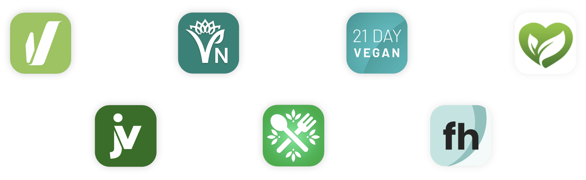
Отзывы пользователей помогли мне понять, какие функции необходимо улучшить.
Проблема
Отсутствие приложений, обучающих философии веганского образа жизни, а также предоставляющих доступ к разнообразным рецептам на растительной основе.
В те приложения с веганскими рецептами, которые существуют на рынке сейчас, не интегрирована функция отслеживания микро и макро нутриентов, что может оттолкнуть людей, которые с большой долей вероятности попробовали бы веганскую диету, но боятся дефицита питательных веществ, который обычно ассоциируется с ней.
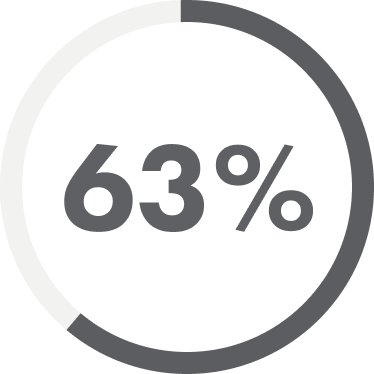
Опрошенных опасаются недоедания из-за постной и безлактозной диеты. Большинство из них не знают о рисках рака и сердечно-сосудистых заболеваний, связанных с потреблением мяса и молочных продуктов.
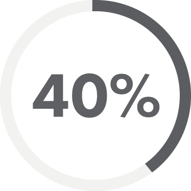
Опрошенных, регулярно занимающиеся спортом, считают, что на растительной диете они не смогут получать достаточно белка для наращивания мышц.
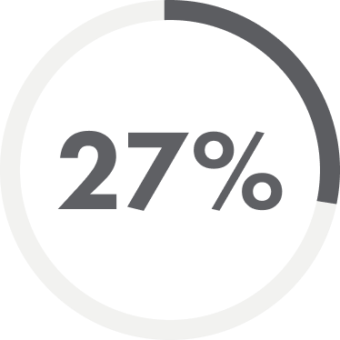
Опрошенных, которые являются вегетарианцами, не хотят отказываться от молочных продуктов и яиц, так как боятся, что их диета может стать скучной и однообразной.
Основные Функции
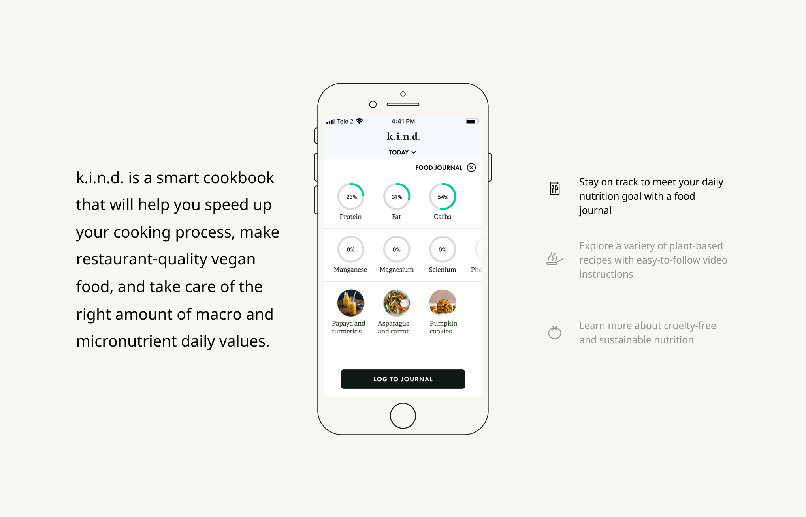
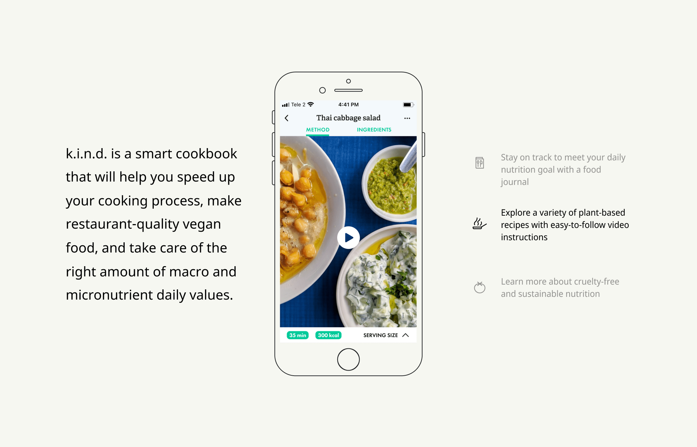
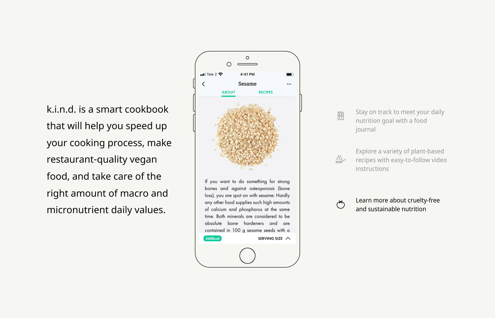
Информационная Архитектура
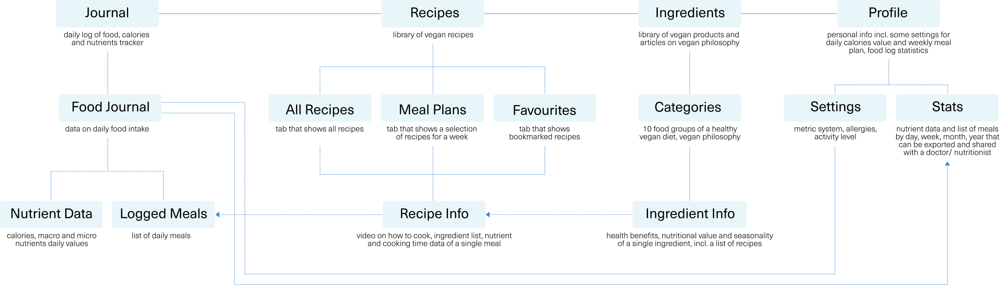
Пользовательские Сценарии
Запиcь приема пищи в журнале:
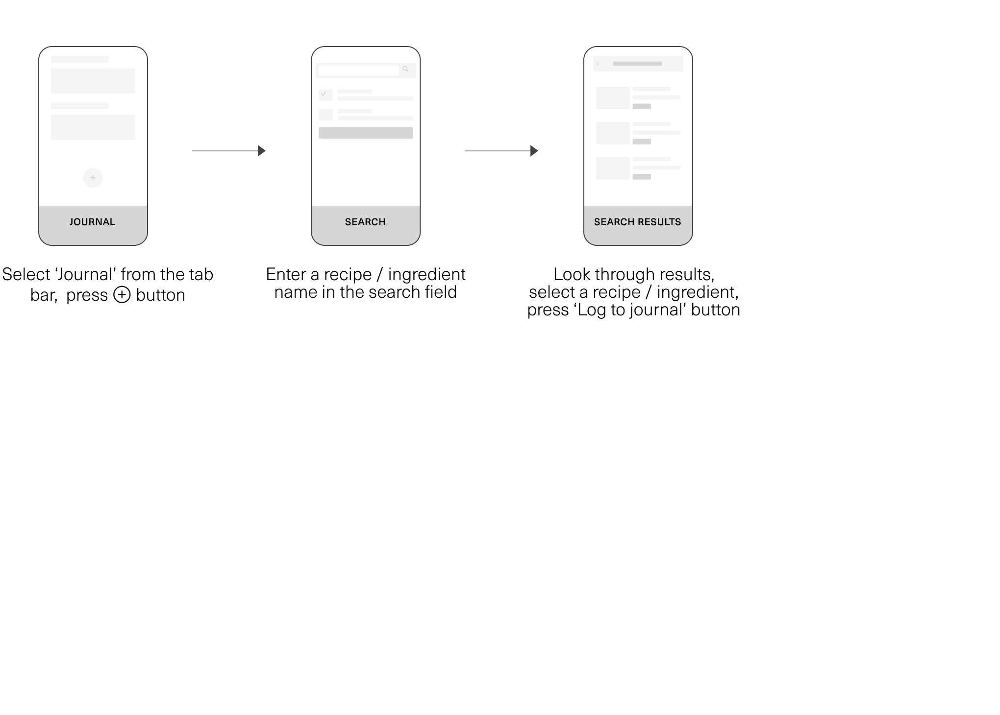
Поиск рецепта — пользователь знает, что он хочет приготовить:
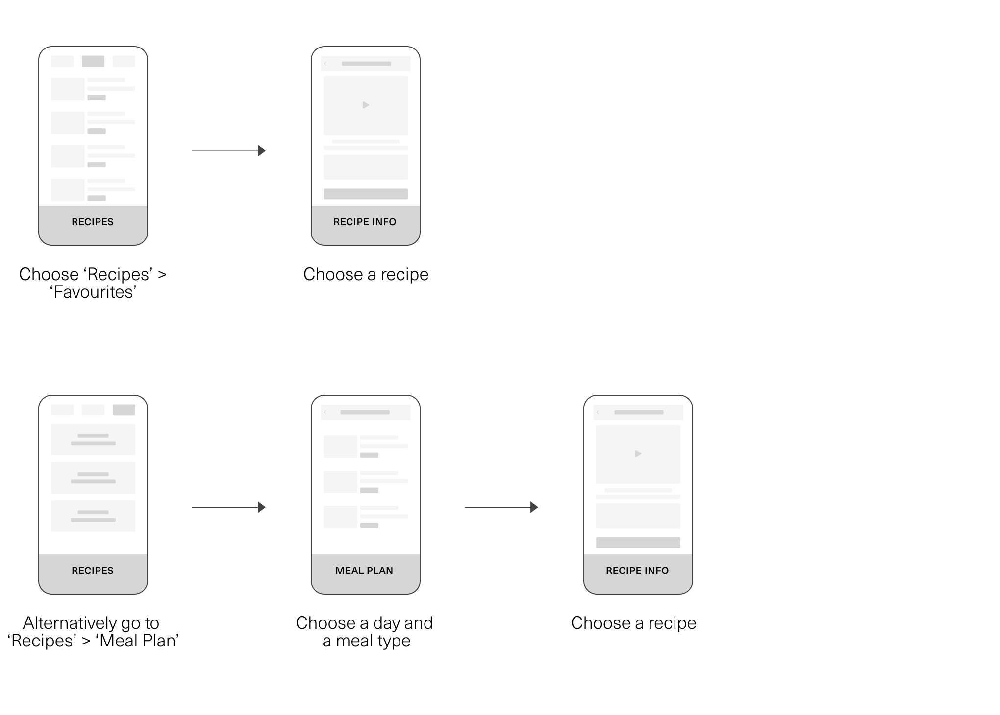
Поиск рецепта — пользователь хочет изучить новые рецепты:
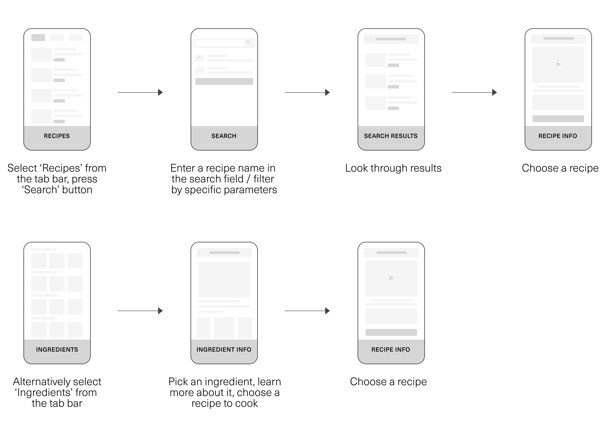
Прототип Высокой Детализации
Дизайн-система
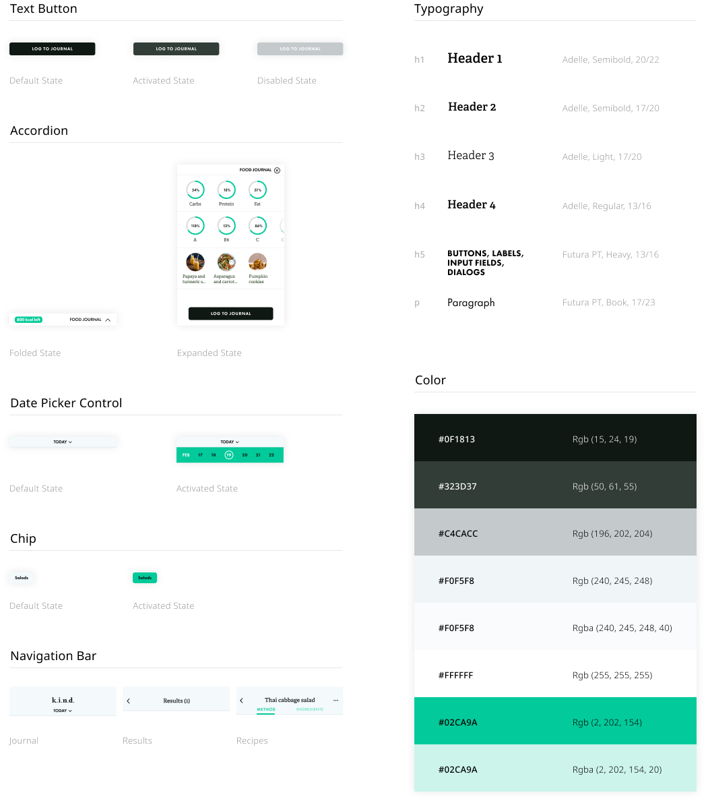
Заключение
Самая большая задача, связанная с дизайном этого приложения, заключалась в организации его объемного контента. В начале я не знала, как визуально сделать так, чтобы данные раскрывались постепенно: от целого к мельчайшим подробностям, и пользователь мог нормально ориентироваться в них. После нескольких итераций мне удалось создать довольно минималистичный макет без ущерба для пользовательского опыта.
Еще одна деталь, которую мне нужно было учитывать, — это то, как сделать процесс приготовления пищи более приятным и легким для пользователя. В конце концов для многих пользователей, которые привыкли есть мясо, поменять свои привычки в питании поначалу может быть сложно и даже вызывать чувство разочарования. Поэтому, помимо съемки видео к рецепту, я решила создать список ингредиентов с фотографиями.